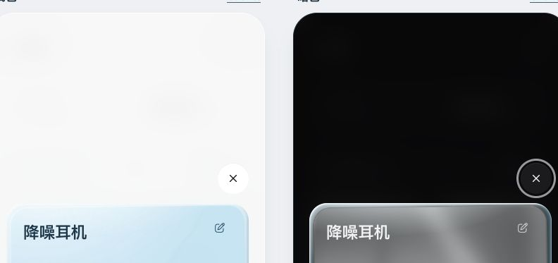

心愿背面 · 高光修正
去掉背面中央有实体轮廓的斜向高光条，保留上沿反射、下沿回光、冰蓝玻璃边与内卡环境倒影。每张图左侧浅色、右侧暗色。



浅暗背面翻转与 50% 兑换禁用已检查。正面反射保留，全部 JavaScript 与 032acc8 一致；本轮只修改背面样式，未重跑全页面测试，原生 App 未改。验证记录。最终反光强度待 Rex 验收。
去掉背面中央有实体轮廓的斜向高光条，保留上沿反射、下沿回光、冰蓝玻璃边与内卡环境倒影。每张图左侧浅色、右侧暗色。

浅暗背面翻转与 50% 兑换禁用已检查。正面反射保留，全部 JavaScript 与 032acc8 一致；本轮只修改背面样式，未重跑全页面测试，原生 App 未改。验证记录。最终反光强度待 Rex 验收。